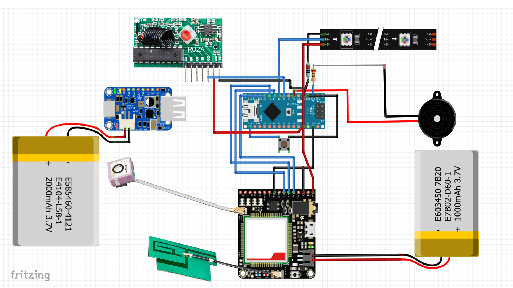
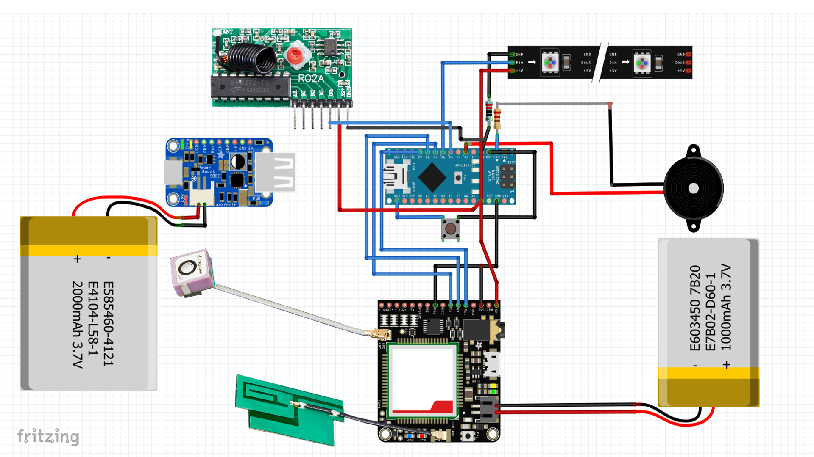

Cassandra Lee R. Carlos
Software Developer and UX Designer
Software Developer and UX Designer
The Life Jacket is a product that was made to be used during natural disasters. Its features are activated by a protected button located on the sleeve of the jacket, the features include: flashing lights,
the sending of Morse code messages through the beeps of a buzzer, sending of GPS location via SMS (text message), and remote triggering through a radio frequency remote that activates the other functions of the jacket as well.
This project won me and my team first place out of the 20+ teams that perticipated in our school's Project Based Learning (PBL) in which judges from organizations such as DOST appraised the works.
 

This was my very first big project in iAcademy, we were tasked with creating wearable technology to solve a problem in the Philippines; the problem we chose to address was
the excessive amount of time it takes to find survivors in natural disasters. At the time of our brainstorming for the project, there was a massive landslide in Naga, Cebu.
It took over a week for rescuers to finally finish their search, with majority being found dead. Of course, after hearing the tragedy, my team wanted to create a device to help
in any way we could in such situations, and where we saw we could intervene was in helping rescuers find survivors more quickly.
Below is the concept board my team and I submitted to the Adobo Design Awards, in which we managed to be one of the few finalists from Senior HighSchool.
Aquainted is a web application built using the Java Spring framework with the goal of educating people about water sustainability, the struggles and importance of upkeeing it
as well as how people can contribute to mitigating the issue.
With this project, my team and I placed 2nd in iAcademy's Project Based Learning for the 1st semester of our 12th year.
While designing the application we aimed to appeal to audiences from all different ages. Hence the colorful choice of palette.
We also wanted to be a sort of "one-stop-shop" and first step into indivisual water sustainability. On the website here is a dedicated news page with a custom search engine that only shows results that relate
to water regardless of what is searched up. This is so that people can keep up to date with news relating to water and sustainability on our site.
As an avenue to bring people to the large scale view of things, there is a page called the advocacy page where there is a button people can press to bring them to the donation page of a water sustainability focused charity.
Of course we wanted to show people habits they can form to aid in lowering their water consumption so we offered two main ways to do so. One being a commitment page as shown in the first photo below and the other being a game.
(Both to be further explained below)

First the commitment page, you get to this page by clicking a button located below the donation portion of the advocacy page, which would lead you to the screen below. On it - as you can see - is a list of commitments accompanied by a button
reading "I Understand".
By clicking that button, you will recieve an email that looks like this daily. The email serves as a reminder with a randomized list of suggested water saving habits.

For the game, as mentioned above we aimed to appeal to different age groups. That meant that we wanted to find a more engaging way to show the habit reminders for younger viewers. The way we saw fit to do so was
by making a game with a cute character and water saving related minigames. Below are a few screenshots.


This project is from our Database class and as written in the title is a very basic CRUD system for a list of students. Meaning you can add student data to the masterlist, remove student data, edit data and delete it from the list all together. To give some context, iJSD is iAcademy's software development and tutoring organization and it is headed by your truly.
Dice Dungeon was the result of one of the performance tasks given to us at school. We were told to make a game that incorporated dice in C++; I made this alone in under 2 hours.
This is a mock Point-Of-Sale program for a pancake restaurant, it was one of our performance tasks from class.
I am a highly capable, full stack developer with experience in project management, programming and designing software architecture. My experience in design and development across various different problem domains aids me in finding pragmatic and creative solutions.
Java
Python
C#
C++
HTML
CSS
SQL
UX Design
Leadership Skills
Analytical Skill
Organizational Skills
Conflict Resolution
Creativity
Collaboration
Adaptability
I have taken many leadership roles in the past and even have experience in tutoring students about topics under Computer Science. My previous experiences have taught me many of the skills that I apply in my work and daily life.
iAcademy’s Student Council
Software Development Strand Representative
iAcademy’s Junior Software Development Organization
Vice President
2019 YouthHack Hackathon
Team Leader
SPCP Debate Varsity
Treasurer
2017 VEX IQ Robotics Competition
Team Captain
Youth Medical Team (Red Cross Certified)
Batch Representative
Notable awards garnered over the years
1st Runner Up for Best PBL
iAcademy’s 7th Semi-Annual PBL Convention 2019
Best PBL
iAcademy’s 5th Semi-Annual PBL Convention 2018
TOEFL Top Scorer
Top Scorer in standardized English competency exam
Subject Excellence Awardee in Computer Science
Award for exceptional performance in Computer Science subject
Here are some pictures of me from different events and competitions
iAcademy’s 7th Semi-Annual PBL Convention 2019
YouthHack Manila Hackathon 2019
iAcademy’s 5th Semi-Annual PBL Convention 2018
The schools I come from helped define my goals and habits in approaching work and learning.
iAcademy
BSCS with a specialization in Cloud Computing and Network Engineering
Software Development (Technical Vocational Strand)
2018 - Present
St. Paul College Pasig
Junior Highschool (Robotics Elective Course)
2011 - 2018
Sacred Heart Academy Pasig
Pre-school and Elementary
2004 - 2011